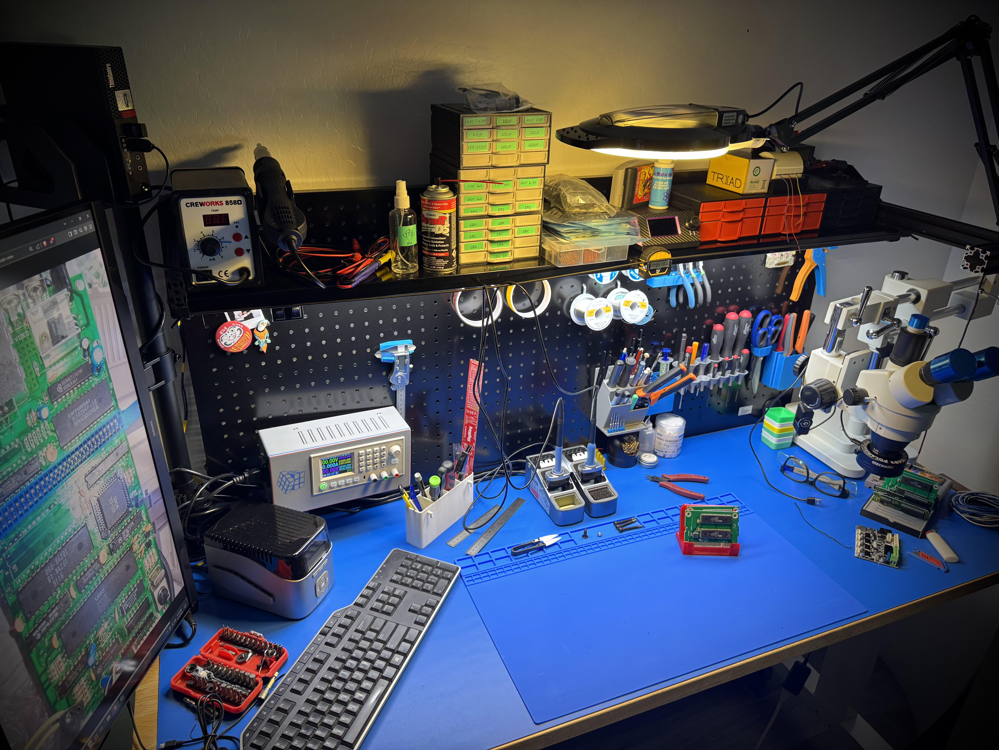
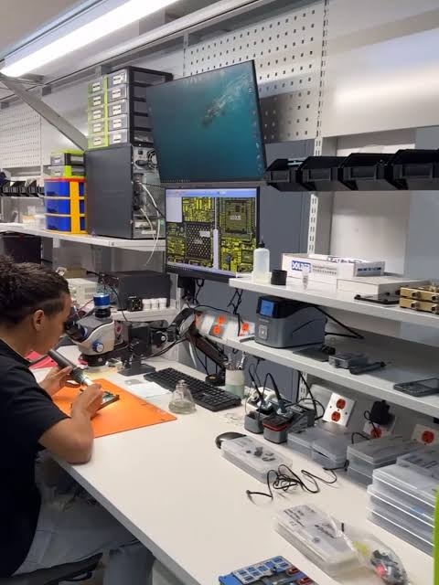
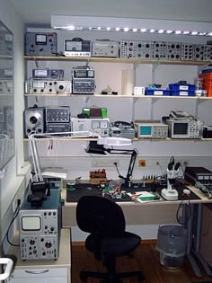
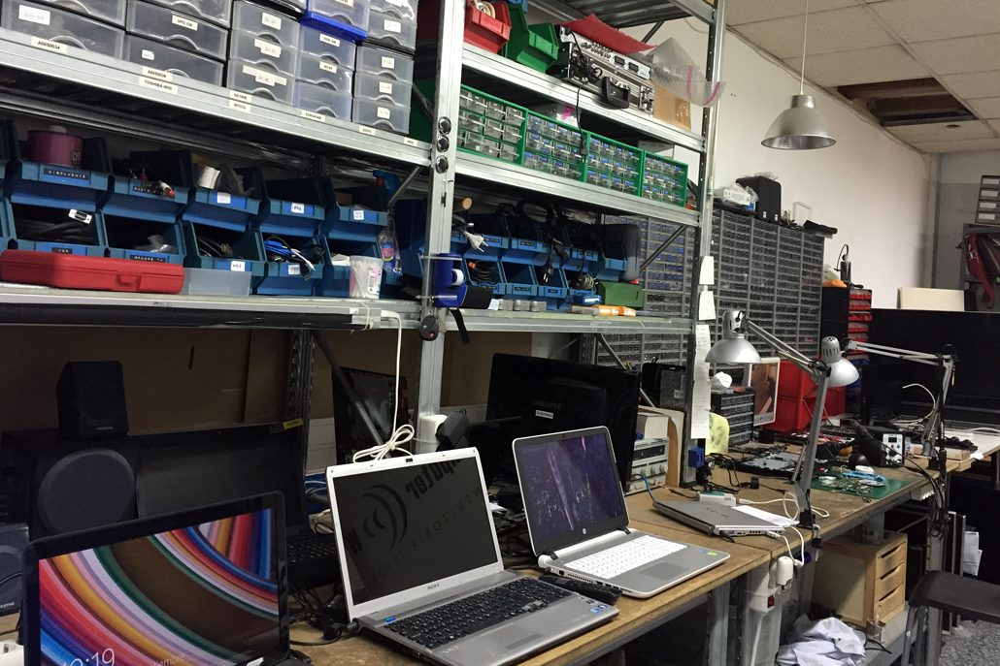
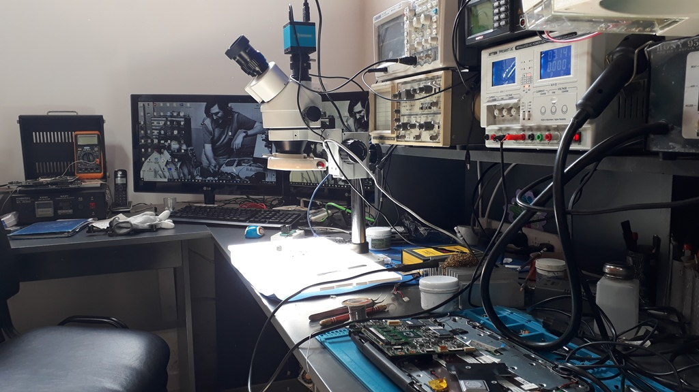
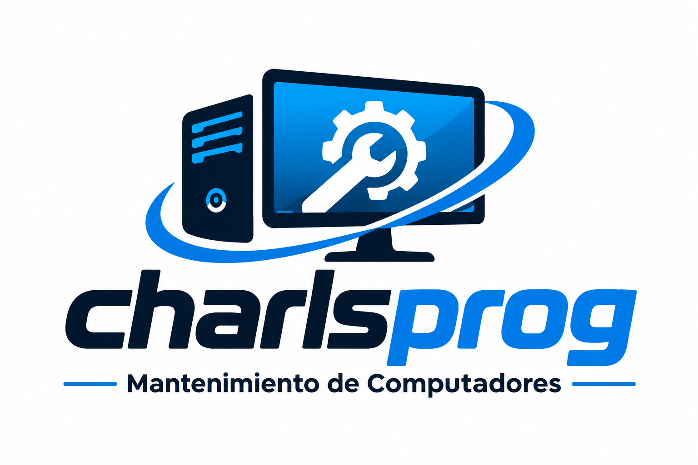

Galería de Trabajos en el Taller
Echa un vistazo a nuestros ensambles, limpiezas y reparación de computadoras de escritorio y gaming.







Echa un vistazo a nuestros ensambles, limpiezas y reparación de computadoras de escritorio y gaming.




